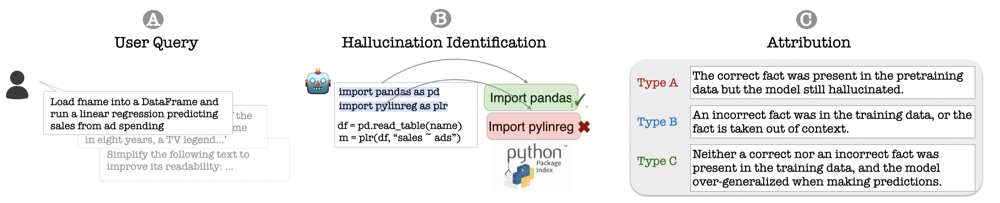

Fantastic LLM Hallucinations and Where To Find Them
Despite their impressive ability to generate high-quality and fluent text, generative large language models (LLMs) also produce hallucinations: statements that are misaligned with established world knowledge or provided input context.
We release:
10,923 prompts for generative models spanning nine domains including programming, scientific attribution, and summarization.
Automatic high-precision verifiers for each use case that decompose LLM generations into atomic units, and verify each unit against a high-quality knowledge source.
150,000 generations from 14 large language models.
A novel hallucination taxonomy for identifying causes of model hallucination based on their origin in pretraining data.

You can find all the details in our paper here.